环境配置
easydft工作流主要基于jobflow-remote,再此基础上还调用了atomate2和jobflow.
注册并创建 MongoDB Atlas 账户
MongoDB Atlas，这是一个由 MongoDB 官方提供的云数据库服务，具有高可用性、自动备份和简化的管理等优势。我们在使用Fireworks或jobflow-remote工作流，抑或是只使用atomate2进行数据储存都需要用到。
访问 MongoDB Atlas 官方网站(https://www.mongodb.com/cloud/atlas/register)，使用电子邮件地址或其他可用方式创建一个新账户。
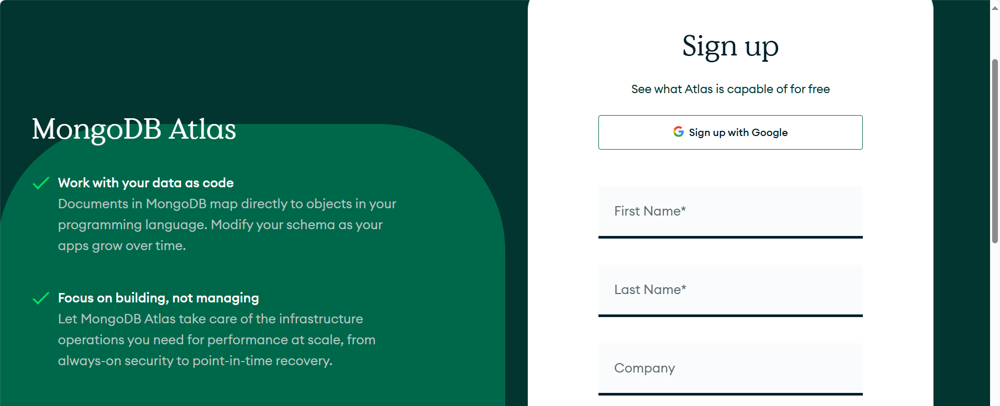
创建新的 Atlas 集群
登录后，可以新建一个Project，命名为：
FireWorks_tutorials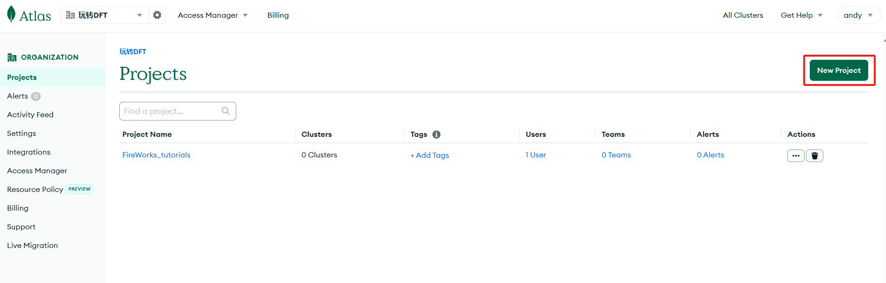
进入
FireWorks_tutorials项目后，系统会提示创建第一个集群。选择“Create”按钮：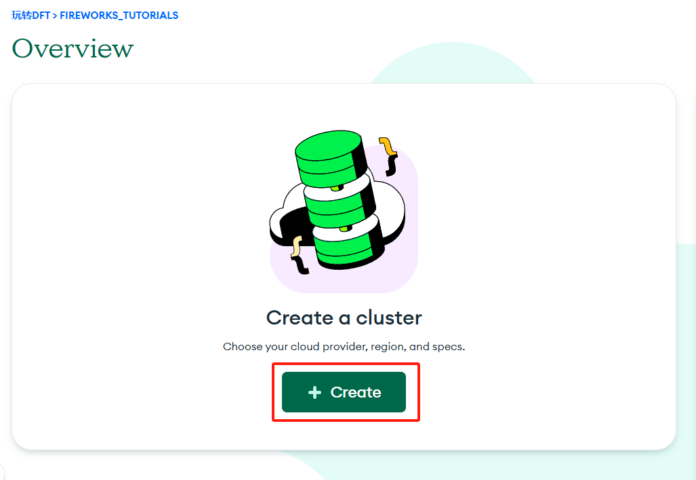
在集群页面中，勾选“Free”。
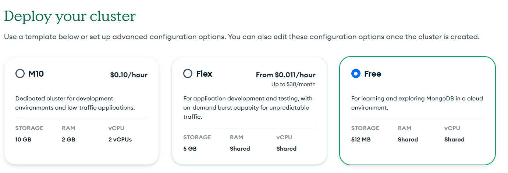
继续下拉页面，“Configurations”中可以命名集群名字，记住取消勾选“Preload sample dataset”
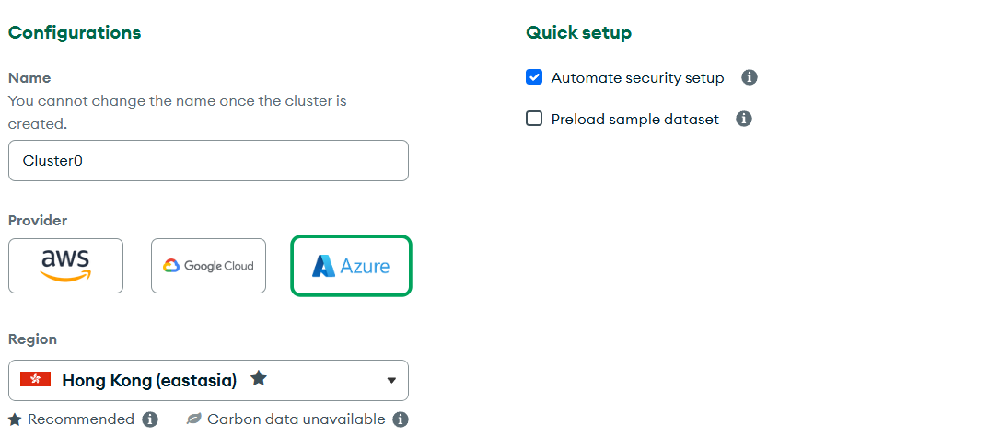
最后点击“Create Deployment”，等待。
设置一个初始的用户，即管理员。
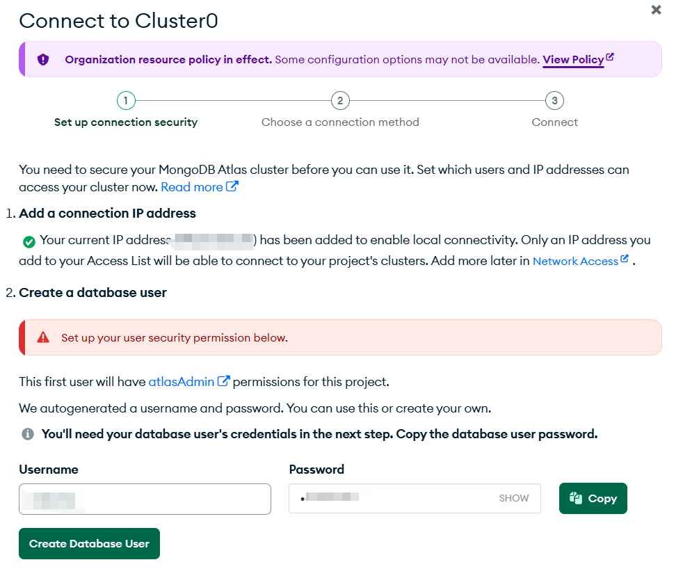
继续下一步，先跳过链接方式，点击“close”。
设置IP地址
左侧菜单栏选择“Network Access”。
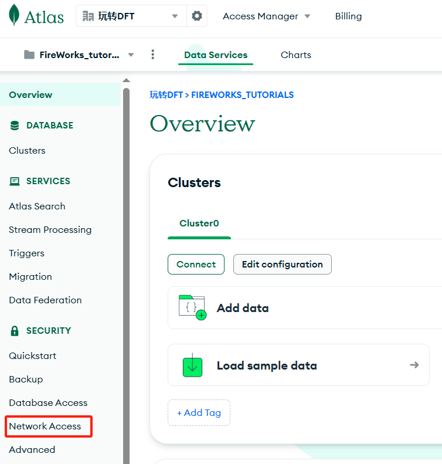
点击“Edit”，随后选择“ALLOW ACCESS FROM ANYWHERE"，“Confirm”确认。
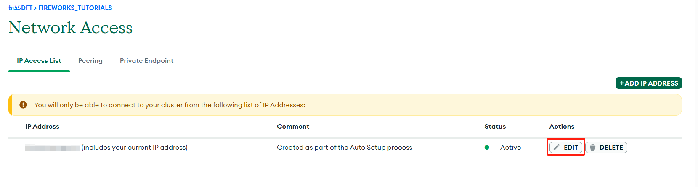
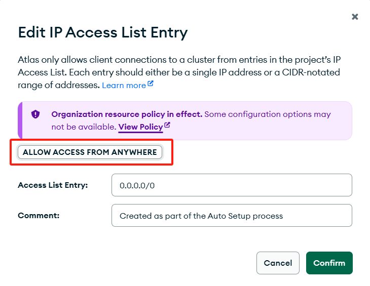
这样可保证从任意IP均可以访问
MongoDB Atlas。
用户管理
左侧菜单栏选择“Database Access”。
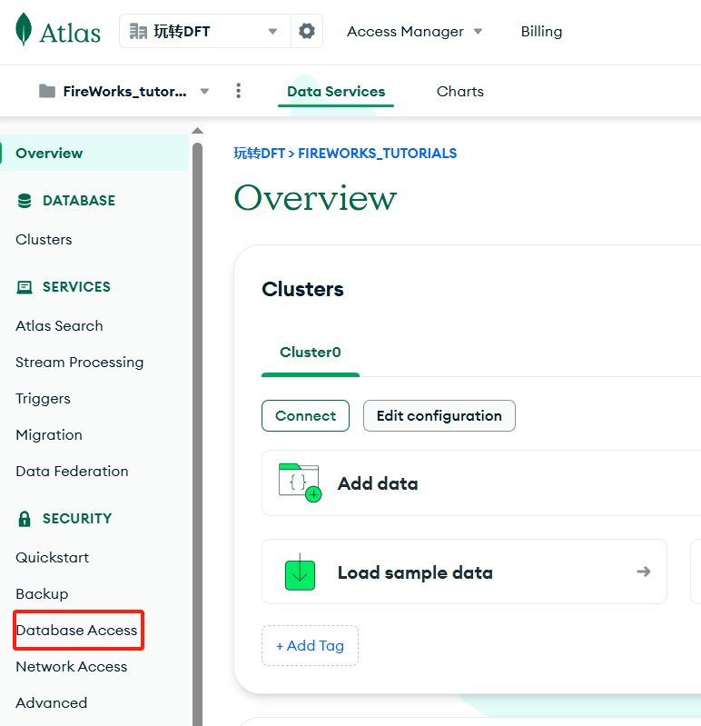
新建User
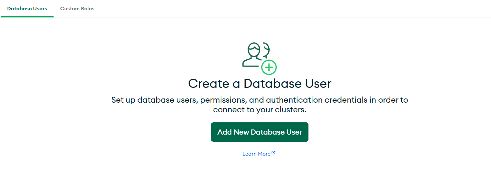
通过用户名，密码的方式新增用户，同时可以设置对应的“身份”。
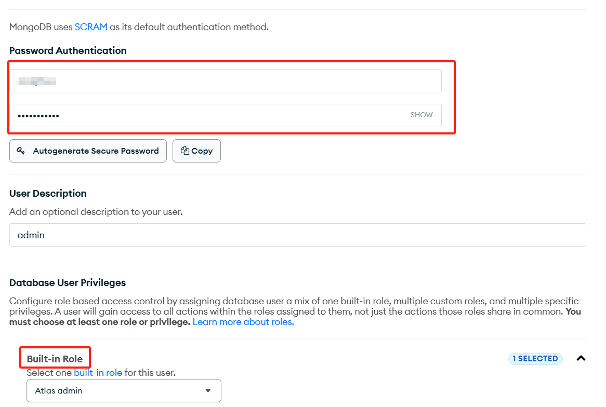
后续需要多个User直接重复上述的操作即可。
连接到集群
在超算上进行远程连接推荐使用
mongodb+srv进行连接，链接可在MongoDB Atlas集群上获取，点击“Connect”。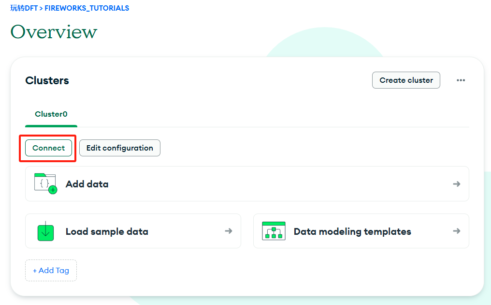选择“Drivers”
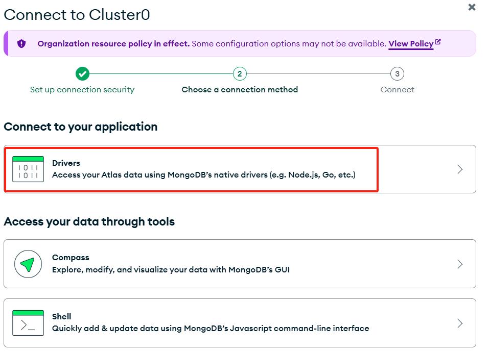
选择合适的编程语言及版本，复制
mongodb+srv链接。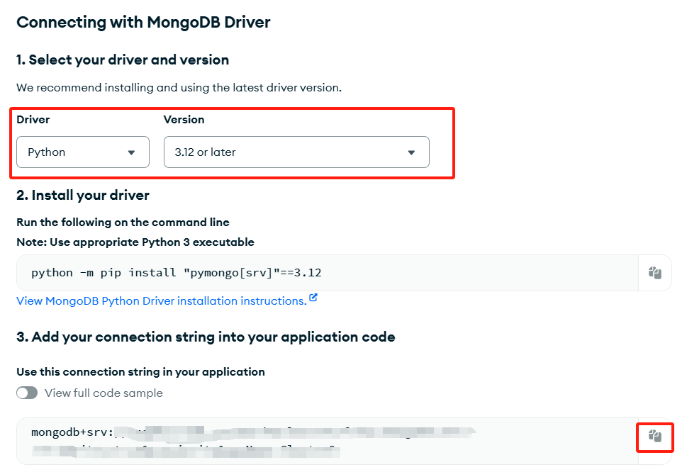
复制到对应的yaml文件中即可
host: mongodb+srv://<db_user>:<db_password>@cluster0.sad4a.mongodb.net/?retryWrites=true&w=majority&appName=Cluster0 name: fireworks uri_store: true
<db_user>和<db_password>替换成你的集群上创建的用户以及密码
jobflow-remote 环境配置
安装 jobflow-remote
pip 一键安装
pip install jobflow-remote
如果需要使用WebGui功能，可以一并安装python-fasthtml
pip install python-fasthtml
部署方式
jobflow-remote提供了三种部署方式：All-in-one、User-Workstation和Full-split。其中个人用户推荐使用All-in-one和User-Workstation两种方式，本文也主要介绍两种方式的配置方法。
All-in-one
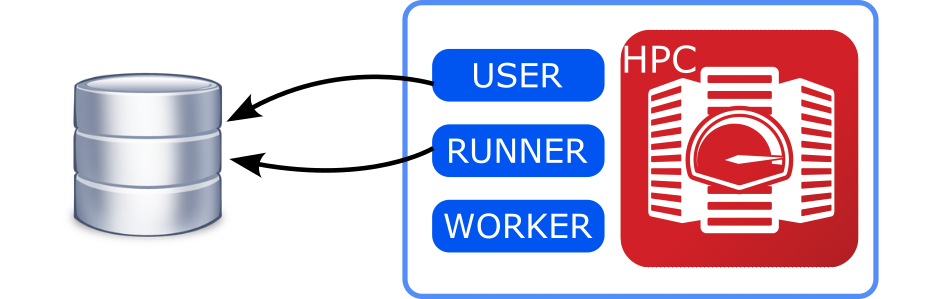
顾名思义，即用户(User)，调度中心(RUNNER)，计算节点(WORKER)全部部署在超算。后续所有操作均在超算用户目录进行。
新建一个项目
jf project generate jftest
此时会在家目录下~/.jfremote文件夹中生成jftest.yaml文件，里面包含了一个项目的所有配置信息，且不同的项目有不同的yaml配置文件控制。
name: jftest
workers:
example_worker:
type: local
scheduler_type: slurm
work_dir: /path/to/run/folder
pre_run:
module load vasp
source /path/to/python/environment/activate <jfremote_conda_environment>
timeout_execute: 60
queue:
store:
type: MongoStore
host: mongodb+srv://<user_name>:<user_password>@cluster0.fvlq3.mongodb.net/?retryWrites=true&w=majority&appName=Cluster0
database: jftest
collection_name: jobs
exec_config: {}
jobstore:
docs_store:
type: MongoStore
database: vasp
host: mongodb+srv://<user_name>:<user_password>@cluster0.fvlq3.mongodb.net/?retryWrites=true&w=majority&appName=Cluster0
collection_name: outputs
additional_stores:
data:
type: GridFSStore
database: vasp
host: mongodb+srv://<user_name>:<user_password>@cluster0.fvlq3.mongodb.net/?retryWrites=true&w=majority&appName=Cluster0
collection_name: outputs_blobs
name：自定义的项目名称
workers
计算节点配置：
All-in-one模式type即为local，scheduler_type为作业系统类型，work_dir为计算任务目录，pre_run可理解为加载计算用到的各类模组；queue
队列信息配置：
jobflow_remote储存任务和工作流信息的数据库jobstore
计算任务输出储存配置：如果运行的是
vasp任务，该配置参考atomate2中jobflow.yaml的配置即可https://materialsproject.github.io/atomate2/user/install.html#
User-Workstation
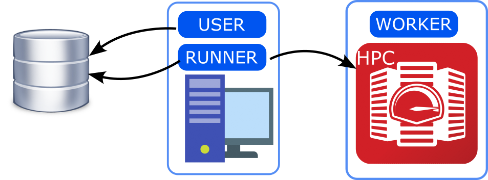
该部署方式用于远程连接计算节点提交工作流，本地（个人PC）来调度工作流信息，与All-in-one的config区别主要体现在worker的设置上：
workers:
example_worker:
type: remote
scheduler_type: slurm
work_dir: /remote/work_dir
pre_run: |
module load vasp
timeout_execute: 60
host: <remote.host.net>
user: <remote.user>
password: <PASSWORD>
type改为remote表示计算节点是远程节点；work_dir也要正确的对应到远程计算节点的计算任务工作目录；host、user、password即远程ssh对应的地址，用户，以及登录密码
其余的设置与All-in-one部署类似。
atomate2 环境配置
使用工作流调用atomate2包里的预设工作流时,需要同时配置好atomate2.
在配置好MongoDB Atlas和jobflow-remote之后,atomate2的配置就简单许多.在任意工作目录下新建命名为atomate2的文件夹,并新建config和logs文件夹:
atomate2
├── config
└── logs
在config文件夹新建jobflow.yaml文件,里面的设置可以直接复制jobflow-remote中项目yaml文件中关于job_store的配置:
JOB_STORE:
docs_store:
type: MongoStore
database: vasp
host: mongodb+srv://<user_name>:<user_password>@cluster0.fvlq3.mongodb.net/?retryWrites=true&w=majority&appName=Cluster0
collection_name: outputs
additional_stores:
data:
type: GridFSStore
database: vasp
host: mongodb+srv://<user_name>:<user_password>@cluster0.fvlq3.mongodb.net/?retryWrites=true&w=majority&appName=Cluster0
collection_name: outputs_blobs
然后再新建atomate2.yaml文件,里面配置的是程序运行命令,如:
VASP_CMD: mpirun vasp_std
更多可设置的参数请参考官网,如果使用vasp进行计算,请至少配置VASP_CMD.
最后,在.bashrc文件中添加上述配置文件的路径即可:
export ATOMATE2_CONFIG_FILE="<<INSTALL_DIR>>/config/atomate2.yaml"
export JOBFLOW_CONFIG_FILE="<<INSTALL_DIR>>/config/jobflow.yaml"